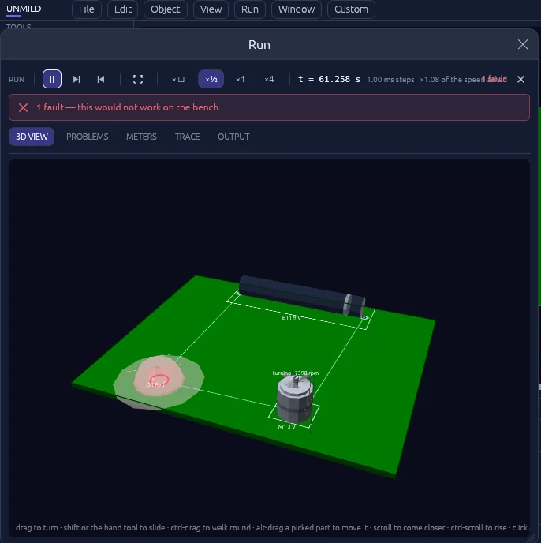
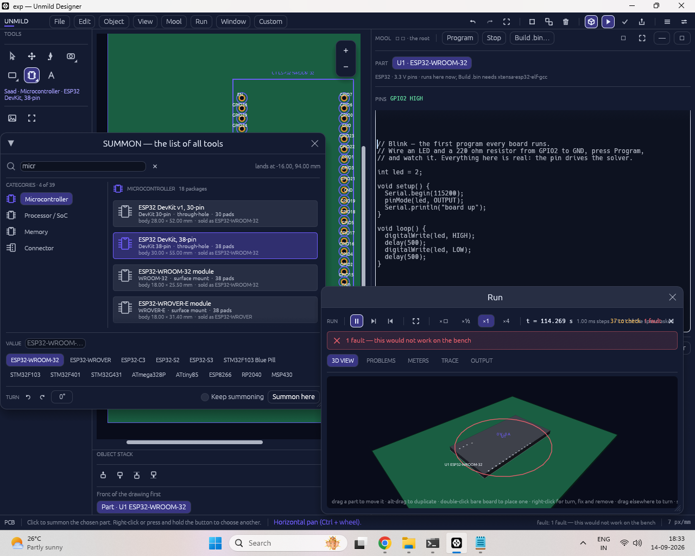
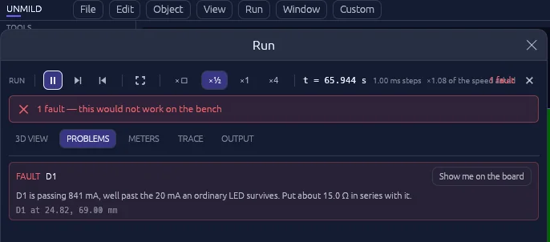
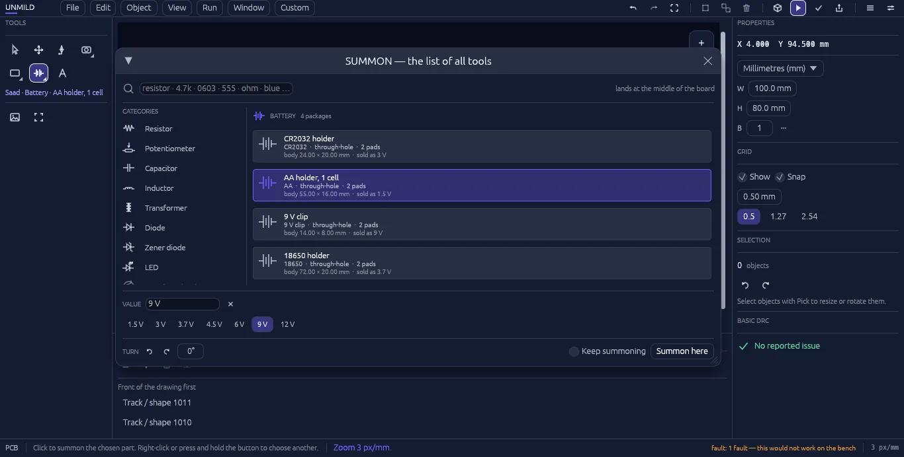
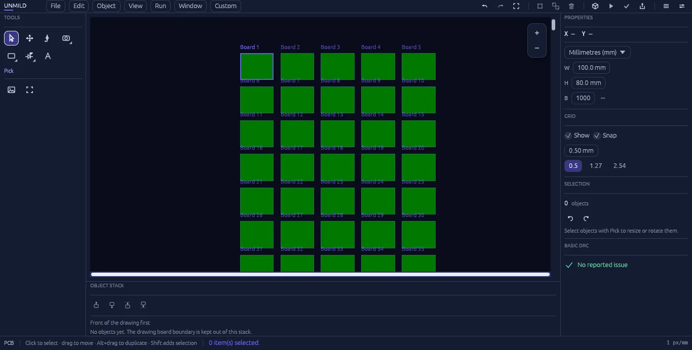

Design with control
Place parts, route copper, shape the board, use layers and grid snap, and tailor navigation, colors, keys, and panels to your working style.
Unmild Designer brings PCB layout, embedded C/C++ development, microcontroller behavior, 3D verification, analysis, and manufacturing release into one serious Windows desktop workflow.

live from Run — a motor at 7,398 rpm, one fault flagged
Mool is Unmild Designer’s embedded-development environment. Write C or C++ against the microcontroller placed on your board, build it through your installed toolchain, create the required binary image, and watch the design respond in real time. Live 3D keeps the physical board visible while behavior, readings, and issues evolve.

Professional electronics work moves from intent to layout, firmware, behavior, verification, and release. Unmild Designer is organized around that complete decision path.
Place parts, route copper, shape the board, use layers and grid snap, and tailor navigation, colors, keys, and panels to your working style.
Use Mool to write embedded C/C++, build the selected target, program the microcontroller, and observe its behavior in the same design environment.
Move from verified design to complete manufacturing output, documentation, review material, and release information without breaking the workflow.
One connected workflow for board design, embedded code, behavior, verification, and manufacturing.
Place parts from the built-in library, route traces with the wire tool, and shape the board outline.
Review the board in 3D and run the current basic PCB DRC and schematic ERC checks before release.
Write embedded C/C++ with Mool, build target-ready binaries through your local toolchain, and program the microcontroller in context.
Generate the complete package for manufacturing, review, and handoff in one professional release workflow.
Run gives supported components a visible state on the board and reports concrete readings and problems. In this example, it identifies an LED current issue and suggests a series-resistor change — useful feedback while the layout is still open.
See 3D verification & Run

The component picker — internally named Saad, Sanskrit for "to call" — searches by part, value, or package and drops it wherever you click. No hunting through nested menus mid-layout.

Unmild Designer is designed to stay out of the way. Make panels float or dock, tune zoom and pan behavior, point zoom to the cursor, save navigation presets, and remap command keys.

Generate manufacturing artwork, drill data, bill of materials, placement information, stackup, review drawings, release notes, and a fabrication manifest together—built for a clean handoff from design to production.
See the full export listUnmild Designer connects physical design with embedded firmware. Lay out the board, write C/C++ in Mool, program the microcontroller, watch the behavior, then release the complete design package. Discover the platform →
A professional Windows electronics platform for PCB layout, embedded firmware, microcontroller behavior, 3D verification, analysis, and manufacturing release.
Projects are saved as .tamas files inside a project folder. Exporting adds a build folder alongside it holding the fabrication output.
Run is the live board-behavior environment. It shows component state, readings, and issues in the context of the PCB, while Mool lets embedded C/C++ code program the microcontroller that drives the design.
One export creates a complete release package: manufacturing artwork, drill data, bill of materials, placement information, stackup, review documentation, and fabrication information.
It is available through the Microsoft Store. View Unmild Designer on Microsoft Store.
Unmild Designer is a professional electronics design platform for PCB, firmware, verification, and manufacturing. More about the platform.
Download Unmild Designer from the Microsoft Store and start designing, verifying, and exporting in one desktop workflow.